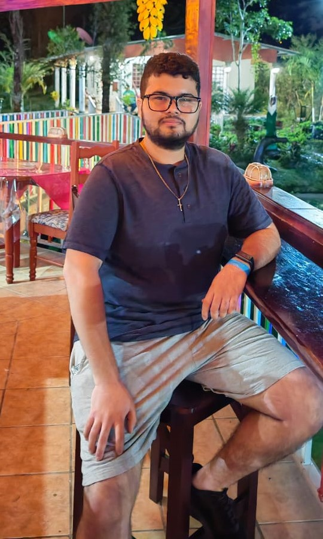

Como panameño, mi identidad cultural está influenciada por la diversidad étnica y las tradiciones que han dado forma a nuestro país. Mis gustos gastronómicos incluyen platos típicos como el sancocho, el arroz con pollo y las torrejitas de maíz nuevo.
Tener una nacionalidad implica estar legal y culturalmente vinculado a un país.
Nuestra gastronomía variada y deliciosa. Platos como el sancocho, el arroz con guandú, la carimañola y el tamal.

¿Quién soy yo?
Nací en La Chorrera el 13 de septiembre de 2003. Desde pequeño, he sido muy curioso. Siempre me ha gustado investigar cómo se hacían las cosas antes de la tecnología, entender los métodos y herramientas que utilizaban en el pasado. Eso me llevo a investigar a varias áreas y terminar fascinado por el mundo de la tecnología, comencé a investigar y a involucrarme más en el tema. Aunque al principio no me gustaba la programación, sino el área de la robótica, con el tiempo le tomé cariño y reconocí la importancia que merecía dentro del mundo.
Un conjunto de hechos y relatos que nos permiten comparar nuestro pasado con nuestro presente para comprender nuestra evolución como sociedad y aprender de los errores.
Nuestra historia ha sido escrita por todos nosotros, cada panameño ha contribuido a la construcción del país con su trabajo, su cultura y sus acciones.
Conquistador: La historia puede ser narrada desde la perspectiva de quienes llegaron a nuevas tierras creyéndose salvadores o portadores de progreso. En su relato, pueden presentarse como aquellos que trajeron orden, conocimiento y desarrollo, justificando sus acciones como una necesidad para civilizar o ayudar a los habitantes locales. También pueden argumentar que los conflictos surgieron por la resistencia o la falta de entendimiento de los conquistados, y no por su propia intervención.
Conquistado: Desde este punto de vista, la historia se centra en la lucha por la libertad y la identidad. El conquistador es visto como una fuerza invasora que solo busca su propio beneficio, explotando los recursos y sometiendo a la población. Se resalta la resistencia, el deseo de preservar la cultura y el sufrimiento causado por la opresión, mostrando el lado humano de aquellos que se enfrentaron a la conquista.